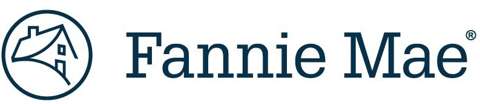

<section id="resume">
  <div class="container">
    <app-section-header [headerTitle]="sectionHeader"></app-section-header>
    <div class="row">
<!--      <p>-->
<!--        Click <button (click)="downloadResume()">HERE</button> to download my-->
<!--        resume!-->
<!--      </p>-->
      <div class="col-sm-12 section-container">
        <div class="resume-listing">
          
          <div class="resume-block">
            <h3 class="resume-position">Full Stack Engineer</h3>
            <h3 class="resume-company">Fannie Mae</h3>
            <h5 class="resume-date">September 2022 - Current</h5>
          </div>
          <div class="bp-block">
            <ul>
              <li>
                Proficiently utilized Java, Angular, Spring Boot, Spring,
                PostgreSQL, and AWS to design, develop, and maintain full-stack
                applications, resulting in robust and scalable software
                solutions.
              </li>
              <li>
                Utilized Agile methodology to successfully manage and deliver
                complex projects within tight deadlines, resulting in increased
                efficiency and customer satisfaction.
              </li>
              <li>
                Demonstrated quick thinking and problem-solving skills by
                successfully brainstorming, designing, and implementing a
                solution to resolve an emergency bug involving a
                NullPointerException that was discovered in the production
                environment, minimizing downtime, and preventing further impact
                to end-users.
              </li>
              <li>
                Improved the start time for a legacy Spring application by 45%
                by modifying the Tomcat server start-up processes to eliminate
                unnecessary configuration scans.
              </li>
            </ul>
          </div>
        </div>
        <div class="resume-listing">
          
          <div class="resume-block-gs">
            <h3 class="resume-position">Full Stack Engineer</h3>
            <h3 class="resume-company">GenSpark</h3>
            <h5 class="resume-date">April 2022 - Current</h5>
          </div>
          <div class="bp-block-gs">
            <ul>
              <li>
                Proactively invested time in self-learning to improve technical
                abilities, staying up to date with industry trends and
                implementing best practices to enhance code quality,
                performance, and user experience.
              </li>
              <li>
                Collaborated with a team of three people to design and develop a
                full-stack application that functioned as a website for a
                restaurant called “Mario’s Pizza” using Java, Spring Boot, and
                React.
              </li>
              <li>
                Created a boarding pass application that allows for the
                generation and storage of a .pdf boarding pass based on the
                customer’s travel details. This application was developed using
                Java and JavaFX.
              </li>
            </ul>
          </div>
        </div>
      </div>
    </div>
  </div>
</section>
